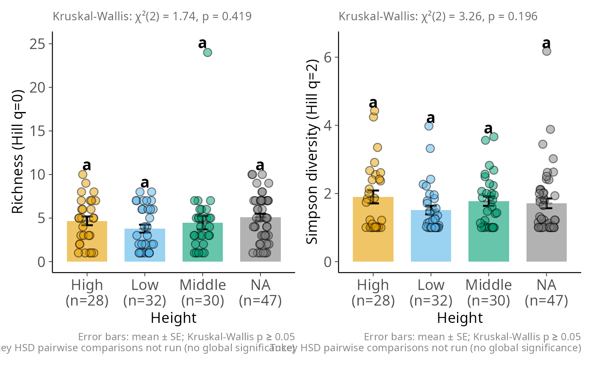
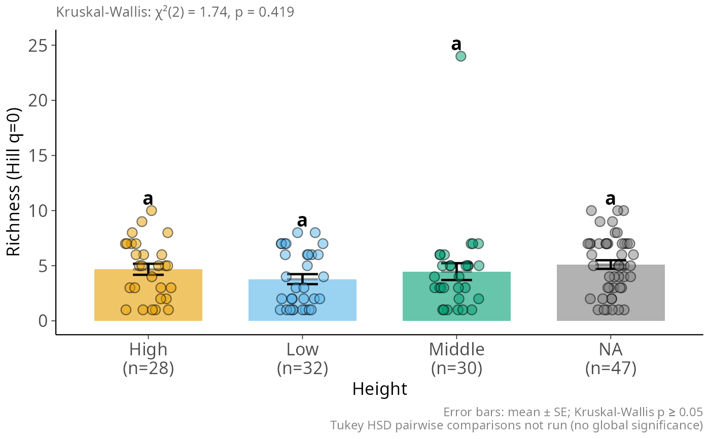
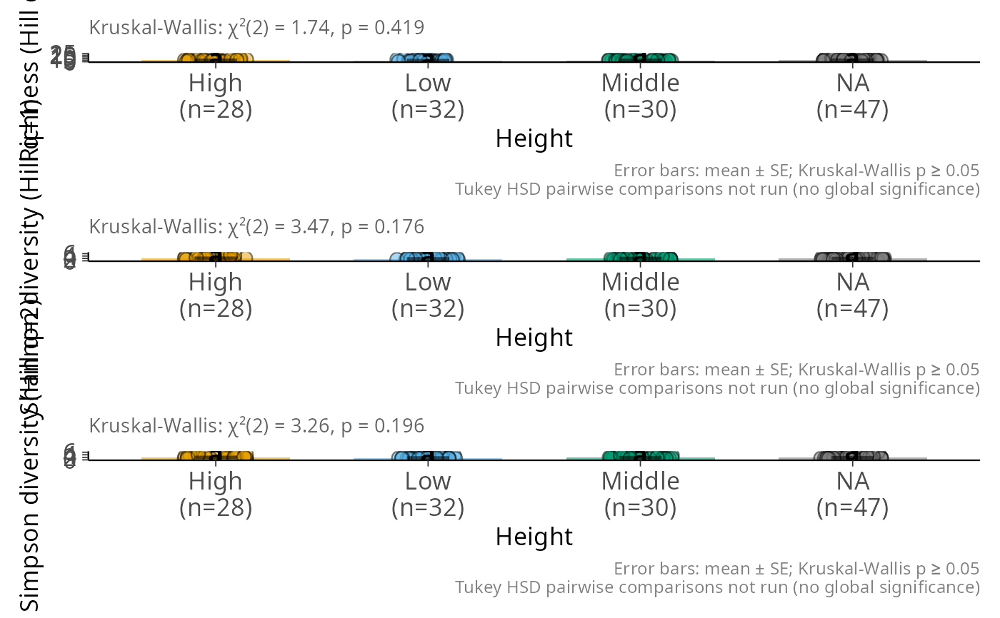
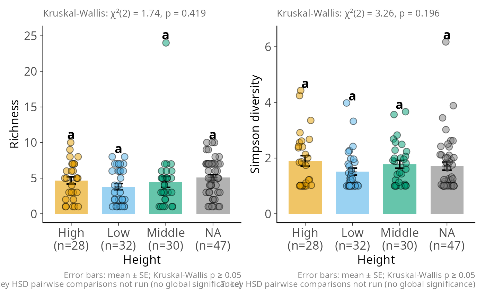
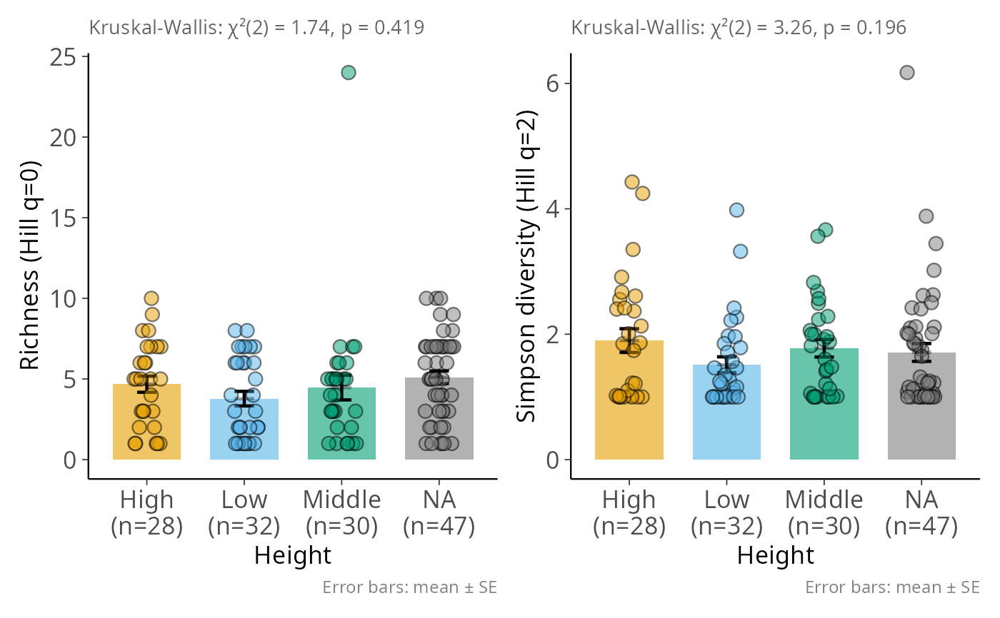

Bar plot of Hill diversity with SE, jittered points, and Kruskal-Wallis test
Source:R/plot_functions.R
hill_bar_pq.Rd
For each Hill diversity order in q, draws a bar at the group mean (±1 SE)
with jittered individual points. A Kruskal-Wallis test is reported in the
subtitle; when the global effect is significant, Tukey HSD pairwise
comparisons produce compact letter displays above the bars. Multiple values
of q are assembled into a patchwork::patchwork layout automatically.
Usage
hill_bar_pq(
physeq,
x,
q = c(0, 2),
fill,
x_lab = NULL,
y_labs = NULL,
ncol = NULL,
alpha = 0.6,
point_size = 3,
base_size = 13,
jitter_width = 0.15,
bar_width = 0.7,
add_letters = TRUE,
p_threshold = 0.05,
letter_size = 5,
letters_top_offset = 0.05,
y_lab_size = NULL,
x_lab_size = NULL,
show_n_samples = TRUE,
palette = c("#E69F00", "#56B4E9", "#009E73", "#F0E442", "#0072B2", "#D55E00",
"#CC79A7", "#000000"),
error_fun = function(x) {
m <- mean(x, na.rm = TRUE)
se <- sd(x, na.rm =
TRUE)/sqrt(sum(!is.na(x)))
c(lower = m - se, upper = m + se)
},
error_fun_lab = "mean ± SE",
error_bar_alpha = 0.35,
point_alpha = 0.5,
letters_below_bar = FALSE,
...
)Arguments
- physeq
(required) a
phyloseq-classobject obtained using thephyloseqpackage.- x
Name (unquoted) of the grouping variable in
sam_data(x-axis).- q
Numeric vector of Hill diversity orders to plot. The corresponding
Hill_<q>columns are computed bypsmelt_samples_pq(). Defaultc(0, 2).- fill
Name (unquoted) of the fill aesthetic column. Defaults to
x.- x_lab
Label for the x-axis. Defaults to the column name of
x.- y_labs
Named character vector of y-axis labels keyed by
Hill_<q>column name (e.g.c(Hill_0 = "Richness")). Unspecified orders receive a default label.- ncol
Number of columns in the patchwork layout when
length(q) > 1. DefaultNULL(automatic).- alpha
Transparency of bars. Default
0.6.- point_size
Size of jittered points. Default
3.- base_size
Base font size in pts. Default
13.- jitter_width
Horizontal jitter width. Default
0.15.- bar_width
Width of bars. Default
0.7.- add_letters
Logical. Add compact letter display above bars. Requires the multcompView package. Default
TRUE.- p_threshold
Significance threshold for the Kruskal-Wallis test. Below this value, Tukey HSD pairwise comparisons are run and letters assigned; above it all groups receive
"a". Default0.05.- letter_size
Size of letter labels in ggplot2 units. Default
5.- letters_top_offset
Fraction of the y-range added above the highest point / error-bar to position letters. Default
0.05.- y_lab_size
Size of y-axis tick labels in pts. Defaults to
base_size.- x_lab_size
Size of x-axis tick labels in pts. Defaults to
base_size.- show_n_samples
Logical. If
TRUE, the number of samples per group is appended below each x-axis tick label as(n=X). DefaultTRUE.- palette
Character vector of fill colours. Defaults to the Okabe-Ito palette.
- error_fun
Function taking a numeric vector and returning a 2-element numeric vector
c(lower, upper)with the actual y-axis bounds of the error bar (not offsets from the mean). The first element is the lower bound, the second is the upper bound. This allows asymmetric intervals such as quantile ranges. Default computes mean ± SE. Example for a 95% quantile interval:function(x) quantile(x, c(0.025, 0.975), na.rm = TRUE).- error_fun_lab
Label for the error bar used in the plot caption. Default
"mean ± SE".- error_bar_alpha
Transparency of the secondary top-half error bar drawn over the jittered points to hint at the upper extent without obscuring data. Default
0.35.- point_alpha
Transparency of the jittered data points. Default
0.5.- letters_below_bar
Logical. When
TRUE, compact letters are placed below the x-axis (aty = -letters_top_offset * y_range), giving a clean fixed position independent of data spread. WhenFALSE(default), letters are placed above whichever is higher: the error bar top or the highest data point.- ...
Additional arguments passed to
psmelt_samples_pq()and hence todivent::div_hill()(e.g.estimator = "naive").
Examples
hill_bar_pq(data_fungi_mini, Height)
#> ! Sample coverage is 0, most estimators will return `NaN`.
#> ! Sample coverage is 0, most estimators will return `NaN`.
#> ! Sample coverage is 0, most estimators will return `NaN`.
#> ! Sample coverage is 0, most estimators will return `NaN`.
#> Joining with `by = join_by(Sample)`

# \donttest{
hill_bar_pq(data_fungi_mini, Height, q = 0)
#> ! Sample coverage is 0, most estimators will return `NaN`.
#> ! Sample coverage is 0, most estimators will return `NaN`.
#> Joining with `by = join_by(Sample)`

hill_bar_pq(data_fungi_mini, Height, q = c(0, 1, 2), ncol = 1)
#> ! Sample coverage is 0, most estimators will return `NaN`.
#> ! Sample coverage is 0, most estimators will return `NaN`.
#> ! Sample coverage is 0, most estimators will return `NaN`.
#> ! Sample coverage is 0, most estimators will return `NaN`.
#> ! Sample coverage is 0, most estimators will return `NaN`.
#> ! Sample coverage is 0, most estimators will return `NaN`.
#> Joining with `by = join_by(Sample)`

hill_bar_pq(data_fungi_mini, Height, q = c(0, 2),
y_labs = c(Hill_0 = "Richness", Hill_2 = "Simpson diversity"))
#> ! Sample coverage is 0, most estimators will return `NaN`.
#> ! Sample coverage is 0, most estimators will return `NaN`.
#> ! Sample coverage is 0, most estimators will return `NaN`.
#> ! Sample coverage is 0, most estimators will return `NaN`.
#> Joining with `by = join_by(Sample)`

hill_bar_pq(data_fungi_mini, Height, add_letters = FALSE)
#> ! Sample coverage is 0, most estimators will return `NaN`.
#> ! Sample coverage is 0, most estimators will return `NaN`.
#> ! Sample coverage is 0, most estimators will return `NaN`.
#> ! Sample coverage is 0, most estimators will return `NaN`.
#> Joining with `by = join_by(Sample)`

# }